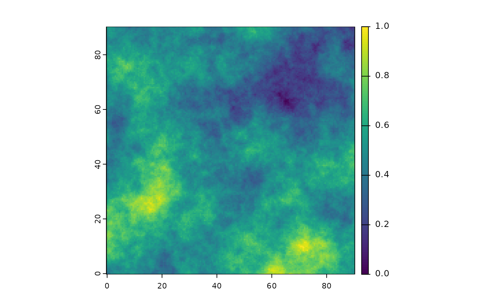

Resource selection function
generate_resource_layer.RdResource selection function
Usage
generate_resource_layer(
beta,
env_layers,
coordinate_fields = c("x", "y"),
norm = TRUE,
return_rasters = TRUE
)Arguments
- beta
The beta values to multiply the environmental layers with (must be as much beta as layers)
- env_layers
Environmental layers to build the resource from. Can either be a data frame (including map coordinates and environmental layer values) or a SpatRast.
- coordinate_fields
If env_layers is a data frame, the fields corresponding to the map coordinates (e.g. c("x", "y"), the default)
- norm
Should the resource layer be normalized?
- return_rasters
Should the function returns the resource as SpatRast in addition to the data frame?
See also
Other environment simulation functions:
generate_env_layer()
Examples
library(terra)
# simple example
grid <- create_grid()
cdt <- generate_env_layer(grid = grid)
#> [using unconditional Gaussian simulation]
rsce <- generate_resource_layer(env_layers = cdt$rasters,
beta = c(2, -1.5))
str(rsce)
#> List of 2
#> $ dataframe:'data.frame': 32761 obs. of 3 variables:
#> ..$ x : num [1:32761] 0 0.5 1 1.5 2 2.5 3 3.5 4 4.5 ...
#> ..$ y : num [1:32761] 90 90 90 90 90 90 90 90 90 90 ...
#> ..$ suitability: num [1:32761] 0.566 0.546 0.56 0.554 0.527 ...
#> $ rasters :S4 class 'SpatRaster' [package "terra"]
plot(rsce$rasters)

# also works when coordinates are not names x,y
cdt2 <- generate_env_layer(grid = grid, n = 3)$dataframe |> dplyr::rename(lon = x, lat = y)
#> [using unconditional Gaussian simulation]
str(generate_resource_layer(env_layers = cdt2, coordinate_fields = c("lon", "lat"),
beta = c(2, -1.5, 3)) )
#> List of 2
#> $ dataframe:'data.frame': 32761 obs. of 3 variables:
#> ..$ lon : num [1:32761] 0 0.5 1 1.5 2 2.5 3 3.5 4 4.5 ...
#> ..$ lat : num [1:32761] 0 0 0 0 0 0 0 0 0 0 ...
#> ..$ suitability: num [1:32761] 0.389 0.346 0.37 0.328 0.324 ...
#> $ rasters :S4 class 'SpatRaster' [package "terra"]